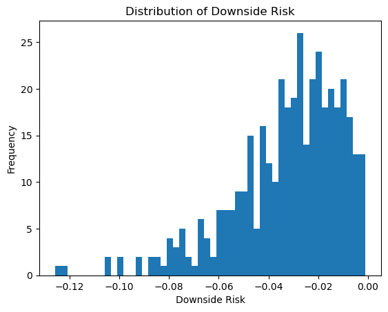
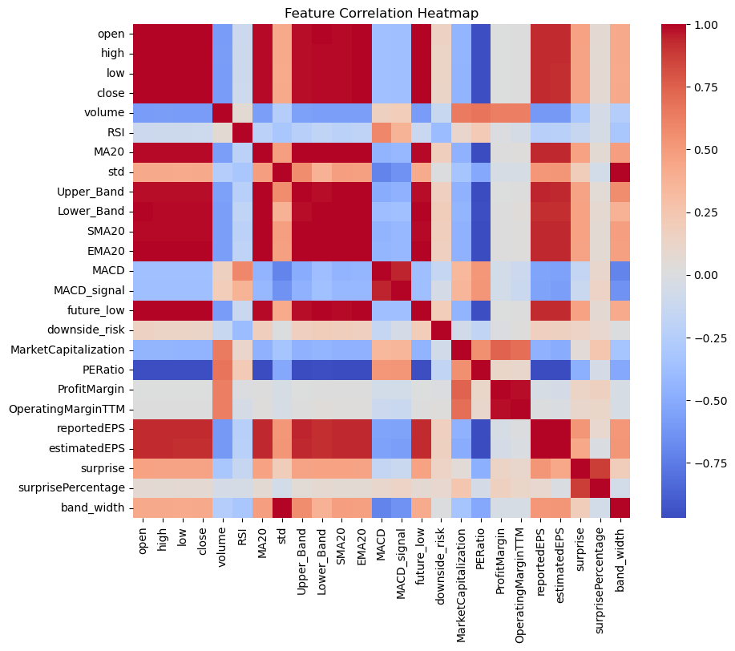
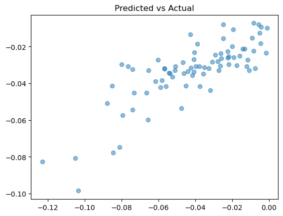
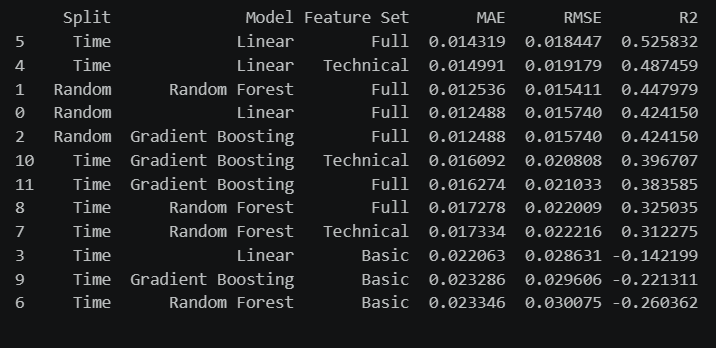

Risk modeling · 2026
Predicting the Unknown Drop
Are short-term stock drops unpredictable, or do measurable signals appear before downside risk rises? Modeling the magnitude of five-day downside risk for AAPL, MSFT, NVDA, GOOG, and AMZN.
The anxiety of the unknown drop
Most people treat the stock market as a guess about direction — up or down. For an everyday investor, the sharper fear isn't a missed gain, it's the sudden decline that erases months of savings. This project asks whether that decline is visible before it happens.
The research question: are short-term stock drops genuinely unpredictable, or are there measurable signals that appear before downside risk rises? We modeled the magnitude of downside risk — the maximum percentage a stock might fall over a five-day window — for five large-cap technology names: Apple, Microsoft, Nvidia, Google, and Amazon.

Building the warning system
Rather than watching price alone, we built a multivariate feature pipeline across three families of signal:
- Momentum — RSI and MACD, tracking how fast price is moving.
- Volatility — Bollinger Bands and rolling standard deviation, measuring instability.
- Fundamentals — quarterly earnings, testing whether company value supported the price.

Simplicity wins
We tested two ensemble methods against a linear baseline. Random forest averages hundreds of decision trees to stabilize its prediction. Gradient boosting builds models in sequence, each one correcting the errors of the last.
Both were outperformed by linear regression. While the ensembles searched for intricate interactions, a straight-line relationship between the technical indicators and forward downside risk turned out to carry most of the available signal.

The best model reached an R² of 0.526 — accounting for 52.6% of the variance in short-term downside risk — with predictions typically landing within 1.4 percentage points of the realized figure.

Why the result matters
Risk modeling of this kind usually sits inside a black box, where the reasoning behind a prediction is invisible to the person affected by it. A transparent linear model built on publicly available indicators — moving averages, RSI, volatility bands, volume behavior — is a plausible blueprint for a warning-light system a retail investor could actually inspect.
Two limits are worth stating plainly. First, a feedback loop: if enough investors act on the same warning signal, the coordinated sell-off contributes to the decline the model was built to anticipate. Second, information inequality: the code is open, but the high-frequency data feeds needed to run this live are not cheap, which pushes the practical benefit toward whoever can already afford the infrastructure.
Data and tooling
Price and fundamentals data via the Alpha Vantage API. Python, pandas, and scikit-learn for feature engineering and modeling. AI tools were used for feature engineering approaches and editing.
← All projects